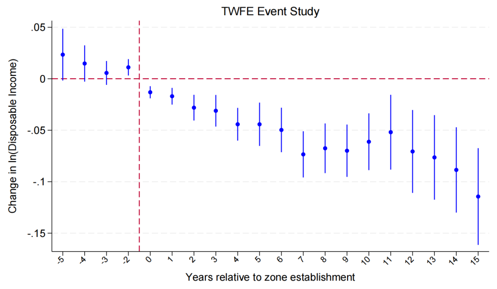
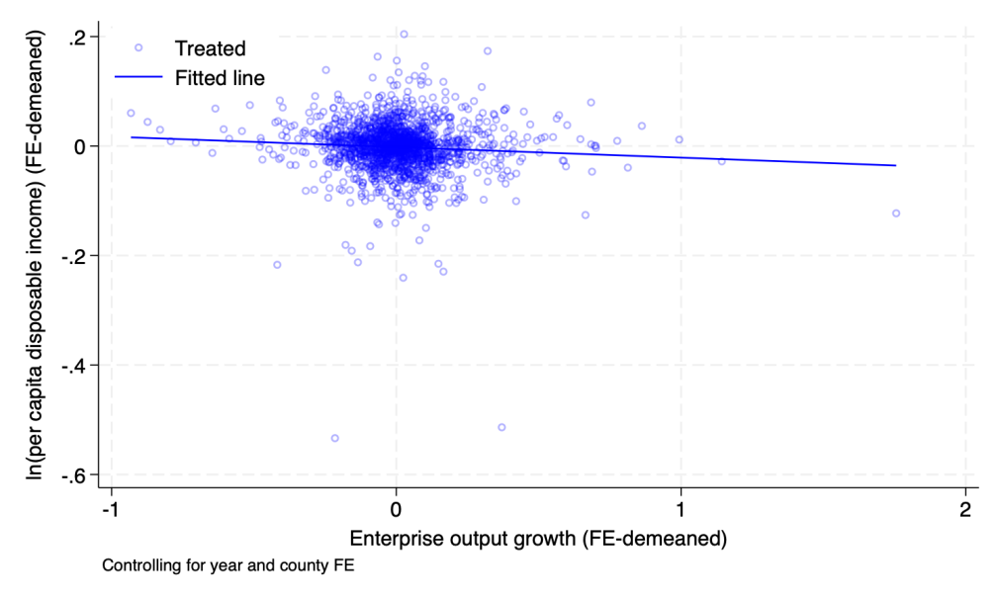

When local governments attract firms into development zones with tax preferences rather than genuine market agglomeration, do households end up paying for the expansion of industry? This paper says yes.
Abstract — China's development zones, established to expand industrial capacity, have been a central policy tool of local governments, but their impact on household income remains poorly understood. We construct a three-sector conceptual framework of households, government, and enterprises to examine how development zones affect the growth of per capita disposable income. Using county-level panel data from 2000 to 2017, we find that development zones significantly reduce per capita disposable income by approximately 1.68%. Zones attract firms primarily through policy-induced tax-preference effects rather than market agglomeration. The expansion of above-scale enterprise output partially mediates the negative effects on households. The adverse effect is larger in fiscally pressured counties. These findings highlight the distributional consequences of place-based industrial policies.


the mediator
- −1.68%*** decline in county per-capita disposable income after zone establishment; robust in CSDID (−1.96%) and PSM (−1.96%).
- Mediator — firm output growth: zones raise above-scale enterprise output growth by +7%***; because attraction is tax-preference-led, faster output growth predicts slower income growth within treated counties — output expansion partially mediates the negative effect.
- Heterogeneity: fiscal pressure amplifies the loss (high-pressure −8.64%*** vs low-pressure −1.18%*, ≈7×; none in capital cities); the effect concentrates in 2004–06 cleanup cohorts and high-growth counties, and is not a migrant-composition artifact.